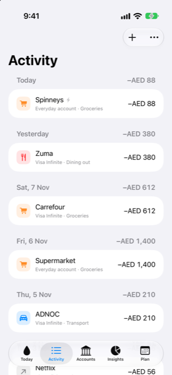

Guide › Recording money
The Activity list
Everything that happened, filters, search, undo, duplicate, split.
Activity lists every transaction Damla has recorded, grouped by day with the newest day first. It is where you check what happened, find a payment again, and change, delete, duplicate or split an entry.

When to use it
- To see what came in and went out on a day, and what the day came to.
- To catch up on what automatic bank alerts added since you last looked.
- To find a payment by name, note or account.
- To correct, remove, repeat or split a transaction after it is recorded.
Step by step
- Open the Activity tab. The list shows every day Damla knows about, newest first.
- To add something, tap the Add menu (the plus button) and choose Type a sentence or Fill a form.
- To narrow the list, tap Filter. In the Show part choose one kind only: Everything, From alerts, Spending, Income, Transfers, Adjustments or Starting balances. In the same menu, under Account, pick one account or All accounts.
- To find something, type in the search box above the list. It matches what you typed against payees, notes and account names.
- Tap a transaction to change it. A normal entry opens in the form; an entry split across categories opens the split sheet.
- Swipe a transaction left and tap Delete to remove it.
- On a row in the day list, swipe right (from the left edge) to see the other actions: Duplicate (for a spending or an income), Turn into instalments (for card purchases) and Split. You can also press and hold a spending or an income for its Duplicate action.
- To see the full list again, adjust the Filter or clear the search box.
Good to know
- The number at the right of each day heading is the day's total: money in less money out. Moves between your own accounts and card payments are not counted in it, and a day with only those shows no total at all.
- Money out is shown with a minus, money in with a plus in green. Moves between your own accounts and adjustments are grey. A purchase in another currency that is still an estimate shows its amount with an
≈sign until the statement confirms it. - Starting balances are not events, so they are kept out of the plain list. To see them, use Filter > Starting balances, or search.
- Duplicate opens a new form with the same amount, account, category and payee, dated today. Nothing is saved until you tap Save in that form. Moves between accounts, card payments and split transactions cannot be duplicated.
- Split is for one payment that covers several categories, such as a supermarket shop that was groceries and one school thing. Choose a category and an amount for each part until nothing is left to share. The payment itself does not change; a transaction that is already split opens the same sheet when you tap it.
- Turn into instalments appears only for a card purchase that is not already on an instalment plan. It opens the instalment form, where you type the numbers your bank states — the monthly instalment, the number of months, any fee and the first date — and tap Convert. Nothing changes until you do.
Related
Something unclear or missing? Write to support@raveniq.ai and say which page.